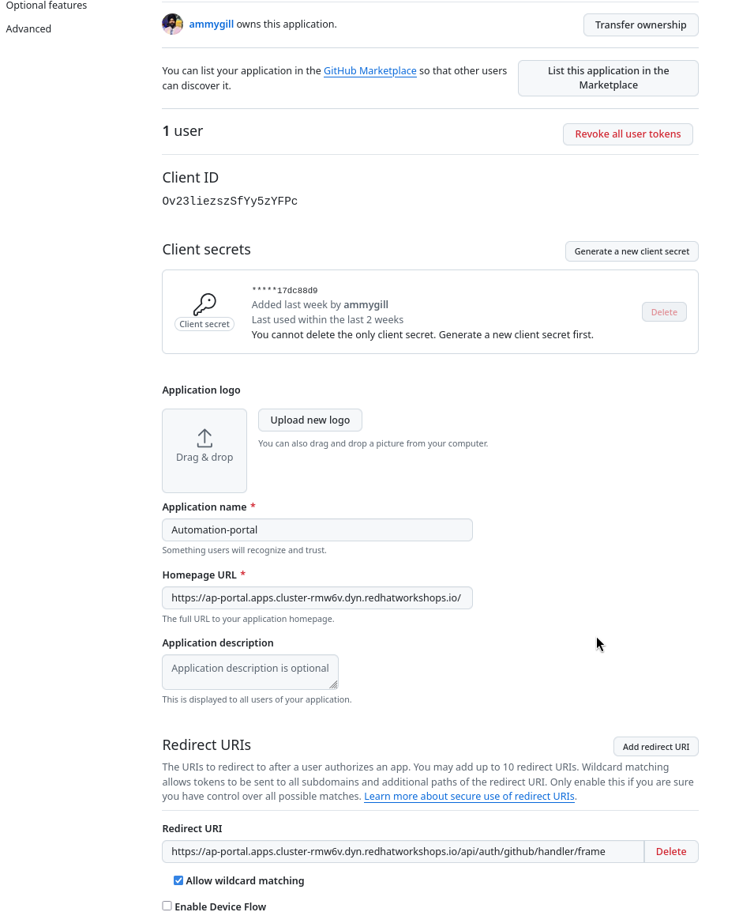

Final Configuration of the Execution Environment
To enable the Execution Environment Builder to push content to the Git repository, we need to configure and fine-tune the OAuth applications created in Git.
-
Go to the GitHub OAuth application created in the previous section and click on Edit to update the settings and
Homepage URL`to automation portal URL and replace the hostname with the correct hostname in "Redirect URI".
Now we are ready to configure the Execution Environment Builder to push content to the Git repository and pull certified content from the Private Automation Hub in chapter 3.